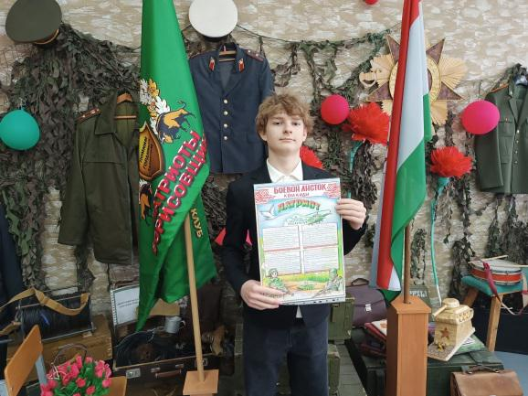
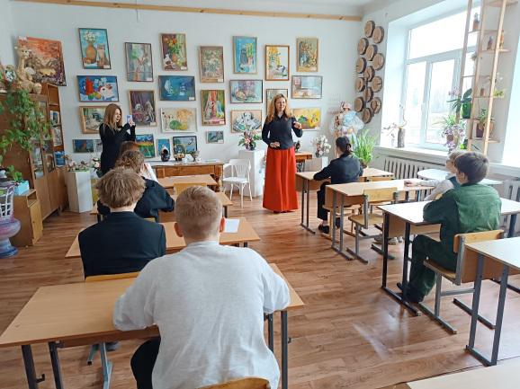
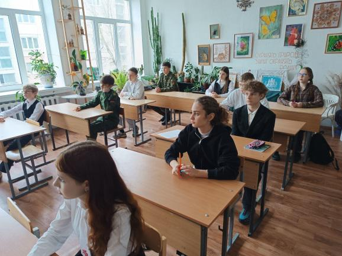
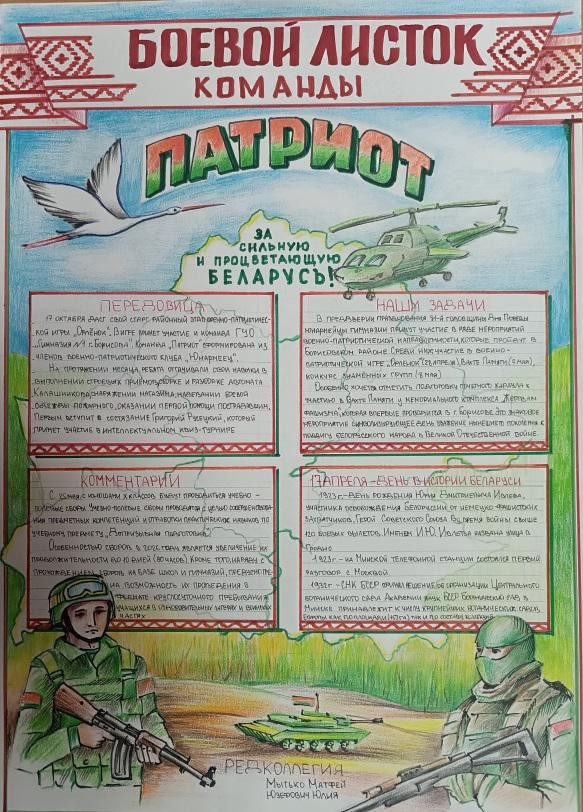

ВОЕННО-ПАТРИОТИЧЕСКОЙ ИГРЕ «ОРЛЕНОК» ДАН СТАРТ!
17 апреля на базе ГУДО «Борисовский центр экологии и туризма» стартовал районный этап военно-патриотической игры «Орленок». В игре примут участие 13 команд, в том числе и наши гимназисты. Все участники команды «Патриот» являются членами военно-патриотического клуба «Юнармеец». Игра состоит из нескольких испытаний, среди которых: военизированная игра на местности «Время команды», смотр строя и песни «Каждый из нас в строю!», творческий конкурс «Боевой листок», интеллектуальный квиз-турнир «Помним о прошлом, гордимся настоящим, думаем о будущем!».


Два испытания «Боевой листок» и интеллектуальный квиз-турнир уже пройдены. Несмотря на то, что итоги еще не подведены, можно уверено сказать, что участие в них было результативным. Особые слова благодарности заслуживают учитель дополнительного образования Ирина Кривенкова и педагог-организатор Мария Солодарь, под чутким руководством которых осуществлялось оформление боевого листка юнармейцем Юлией Юзефович. Юнармеец Григорий Русецкий защищал честь команды на интеллектуальном квиз-турнире «Помним о прошлом, гордимся настоящим, думаем о будущем!».


Основной этап игры состоится 28 апреля. Пожелаем нашим ребятам успеха в игре!